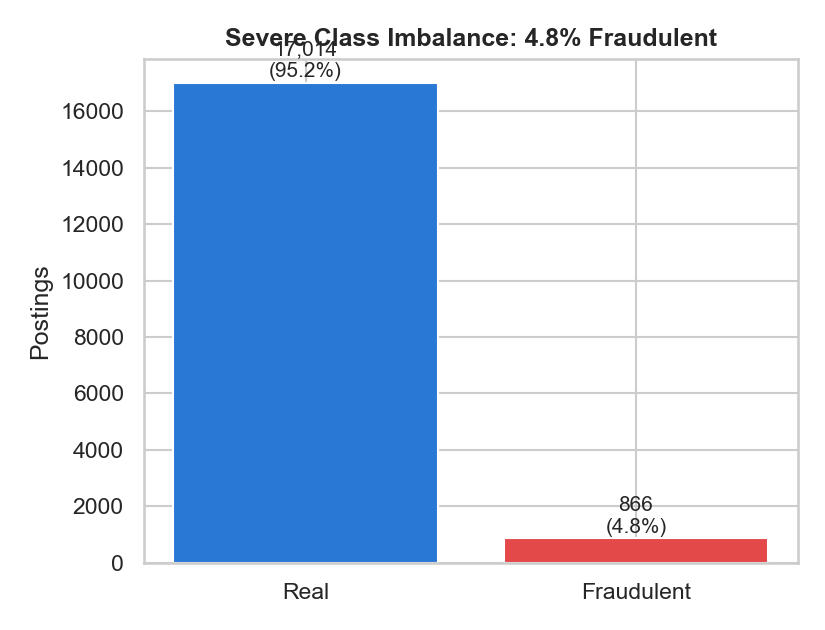
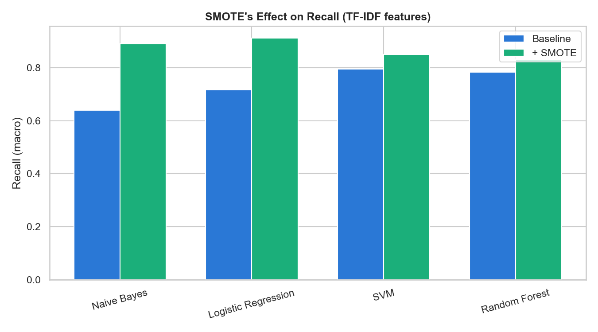
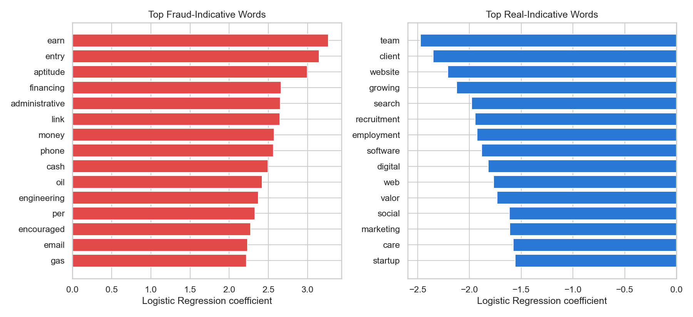

The numbers
Problem
Fraudulent job postings cost applicants money, time, and sometimes their identity. This project builds a text classifier that flags fraudulent postings from their text content alone — title, company profile, description, requirements, benefits — under a dataset where fraud is under 5% of postings, so plain accuracy is meaningless (predicting "real" for everything scores 95%).
Class imbalance

Method (reproduced fresh)
- Clean — fill missing text fields, combine into one document per posting, lowercase, strip punctuation/numbers, remove stopwords, lemmatize.
- Split — 80/20 stratified (14,304 train / 3,576 test), vectorizers fit on training data only.
- Baseline models — Naive Bayes, Logistic Regression, SVM, Random Forest × TF-IDF/CountVectorizer.
- SMOTE — synthetic minority oversampling on the training set only.
- Feature importance — Logistic Regression + TF-IDF coefficients.
Results: traditional ML + SMOTE
| Vectorizer | Model | Balanced Acc. | Precision | Recall | F1 |
|---|---|---|---|---|---|
| CountVec | Logistic Regression (baseline) | 0.885 | 0.887 | 0.885 | 0.886 |
| TF-IDF | SVM (baseline) | 0.795 | 0.990 | 0.795 | 0.866 |
| TF-IDF | SVM + SMOTE | 0.849 | 0.980 | 0.849 | 0.903 |
| TF-IDF | Random Forest + SMOTE | 0.829 | 0.983 | 0.829 | 0.890 |
| TF-IDF | Logistic Regression + SMOTE | 0.912 | 0.808 | 0.912 | 0.851 |

TF-IDF + SVM + SMOTE was the best F1 in this reproduced run. Logistic Regression + SMOTE trades precision for the highest recall (0.912) — the better choice if missing a fraudulent posting is costlier than a false alarm.
What the model actually learned

Fraud-indicative: earn, entry, aptitude, financing, administrative, link, money, phone, cash — urgency and vague-compensation language. Real-indicative: team, client, website, growing, search, recruitment, employment, software, digital — specific professional/organizational context. This lines up with how these scams actually read: promise easy money fast, skip the specifics.
Results: deep learning & BERT (from the original run)
| Model | Type | Balanced Acc. | Precision | Recall | F1 |
|---|---|---|---|---|---|
| CNN | Deep Learning | 0.930 | 0.99 | 0.93 | 0.96 |
| BiLSTM | Deep Learning | 0.930 | 0.99 | 0.93 | 0.96 |
| LSTM | Deep Learning | 0.500 | 0.49 | 0.50 | 0.49 |
| BERT (fine-tuned) | Transformer | 0.930 | 0.96 | 0.93 | 0.94 |
Error analysis (from the original run)
The hardest cases to classify, across every model, shared a pattern: short or generic descriptions, and fraudulent postings written in polished, professional-sounding language that mimics legitimate corporate tone — hard to catch even for a human reader. Conversely, some real postings with enthusiastic marketing-style language ("join our fast-growing team in a fun environment!") triggered false positives, since that phrasing overlaps with scam-adjacent lexical patterns.